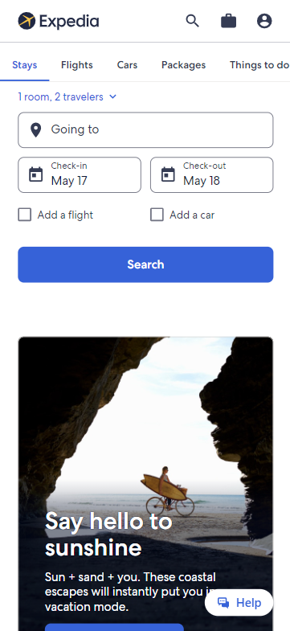
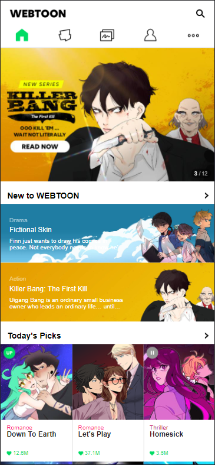
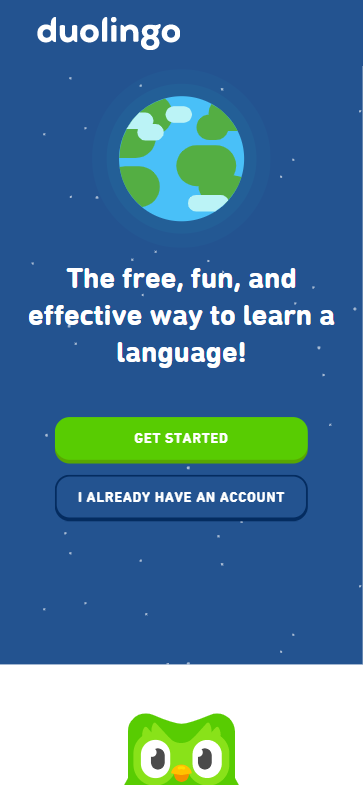

Visual Heirarchy
Expedia
https://www.expedia.com/
I think that Expedia did well in the visual heirarchy of their webpage. The organization of their content was based on the what they believe to not only be importent to the user, but also what was important for them to want the user to be able to view first. As the most important thing to the user, Expedia had the links and icons of search filters at the very top of the page. They then included their own promotional information that may be of interest to the user.
Rule of Thirds
Webtoon
https://www.webtoons.com/en/
What Webtoon was able to do so well is keep the relevant content organized by using the Rule of Thrids. They did this by having the site's latest news in the upper two Thirds of the screen. This not only makes it easier to view things because of the large size, but it makes it a lot more comfortable to look at as you scroll down to the rest of the homepage where other content and information are given.
Contrast
Duolingo
https://www.duolingo.com/
When you look at the official webpage of Duolingo, they make the overall design of the main page dark. There are some other bright colors employed as part of the design, but they gave the most contrast to the links and text used. This creates a clear demand for the users' attention to take action. After you scroll throught the inital part of the page, you will find a clear contrast background used in the webpage. The background is no longer a dark color but just plain white while the text colour is in gray and black. This is where more information about the site and the company is given. But the elements of the page that remains the same is in the type used and the accent colours along with the company's logo.